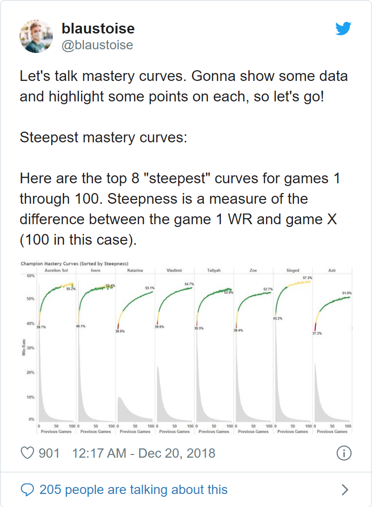
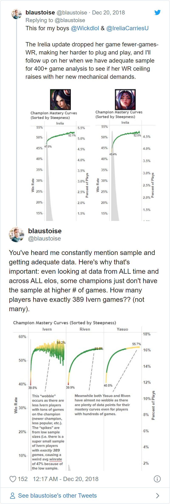

Applying the concept of Learning Curve to Legends of Runeterras’ decks.
Win rate is the most common and most useful metric when evaluating a deck in a Collectible Card Games (CCG) but that value alone may not tell the full story. In Legends of Runeterra (LoR), a common example for saying that the win rate alone isn’t enough is citing “Lee Sin (MT/IO)” decks.
In the ladder, acroos all Masters’ players, even when LeeSin win rate was only ranging around 50% it was considered an undisputed Tier-1 choice (similar now with Akshan/Lee?), so why was as such when it wasn’t an highly performing deck? Because:
It was a strong option in a more controlled format like during tournaments
Because that win rate included both “noobs” and more experienced player with the deck. It is a common opinion in the community that only after playing an huge amount of games with Lee that a player would learn how to pilot the deck and bring it to its fullest potential, changing radically the match ups more in its favor.
From my knowledge there’s no hard data to support the claim but just the overall feeling from the community, but this doesn’t mean that the hyphotesis is not solid. Learning curve are a thing and in the context of “Runeterra” it was perfectly showed by an ex-Rioter when talking about certain champion learning-curve in League of Legends (LoL)

The reason I’m showing this tweet as an example should be easy to understand: here, I’ll try to replicate those graphs for LoR.
The dataset consist of at most 137270 games played after the application of patch 2.11 so after 2021-06-30 19:00:00 CEST.
These are games collected following two criteria:
Games from Master players
Games from the previous top32 players from the latest Seasonal (EU and NA).
From these I filtered the games only on Constructed pvp modes (Normal,Ranked,StandardGauntlet,Bo3ChallengeLobby). 1
With 2.12 there has been an addition of several cards that heavily affected the metagame so there’s a case to restrict the analysis only to games on the same patch (2_11 or 2_12). In addition, since we are talking about learning curve it may be intuitive to leave all games between two human players (all pvp constructed modes) but some may think that it’s only appropriate to limit the data to Ranked games. By considering both factors the data we start with are distributed like this:
| Characteristic | N | 2_11, N = 56,1611 | 2_12, N = 81,1091 |
|---|---|---|---|
| pvp | 137,270 | ||
| notRanked | 5,608 (10.0%) | 21,437 (26%) | |
| Ranked | 50,553 (90%) | 59,672 (74%) | |
|
1
n (%)
|
|||
While this is the available dataset one should ask: which decks should I check? They need of course be decks that doesn’t exist before patch 2.11 or that they were soo rare that I can assume my reference population didn’t play them at all. Luckily the choice of patch 2.11 is not at random as it introduced a small expansion “Rise of the Underworld” that introduced a couple of new meta decks. In addition it would be wiser to choose decks whose structure is mostly defined by a limited range of choices because of the limited card-pool. In addition
What follows are decks that I considred potential candidate for this analysis and the respective sample size available:
Lurk (Pyke/Rek’Sai) - n°games: 29959
“Chrono Squad” 2 (Ekko/Zilean) - n°games: 3894
Yeti - n°games: 1241 with PnZ and n°games: 959 with Noxus - being more popular thanks to the introduction or Abominable Guardian
Elnuk - n°games: 412 - being more popular thanks to the introduction or Volunteer Elnuk
Lulu/Jinx - n°games: 3724 - not new but very rarely played and not only risen in popularity in 2.12 but also made stronger thanks to Boom Baboon
Those are max numbers of games available, their number could be reduced depending on the subset we would prefer to use like the patch and pvp-mode chosen. This numbers can be seen in Tab:1
Table 1: Summary table
| Characteristic | 2_11 | 2_12 | ||||
|---|---|---|---|---|---|---|
| N | notRanked, N = 1,8331 | Ranked, N = 24,1361 | N | notRanked, N = 3,1171 | Ranked, N = 11,1031 | |
| player | 25,969 | 14,220 | ||||
| Ekko / Zilean | 351 (12%) | 2,661 (88%) | 442 (50%) | 440 (50%) | ||
| Elnuk (FR/PZ) | 69 (19%) | 285 (81%) | 21 (36%) | 37 (64%) | ||
| Jinx / Lulu | 141 (9.3%) | 1,372 (91%) | 390 (18%) | 1,821 (82%) | ||
| Pyke / Rek'Sai | 1,075 (5.6%) | 18,225 (94%) | 2,068 (19%) | 8,591 (81%) | ||
| Yeti (FR/NX) | 92 (11%) | 717 (89%) | 111 (74%) | 39 (26%) | ||
| Yeti (FR/PZ) | 105 (11%) | 876 (89%) | 85 (33%) | 175 (67%) | ||
|
1
n (%)
|
||||||
As shown in the above table there’s an high number of games of Lurk games but way lower for everything else. Still, using only one example would result on a terrible external validation so it would be better to at least add a couple more cases (not that with just three is much better).
Looking at the number in Tab:1 the best candidate are “Chrono Squad” (Ekko/Zilean) and Jinx/Lulu. “Chrono Squad” dataset also may potentially be better since while the numbers for Jinx/Lulu aren’t that bad, “Chrono Squad” games are mostly on patch 2.11 so mostly in a stable metagame and expected average win rate.
Before trying to recreate the mastery curve we must be sure how it’s created.
The main question is: taking in account two players: one with 100 games and one with 50 games. Do I have 150 points using the win rates from 1 to 100 games and 1 to 50 games or do I have only 2 points? One corresponding to 100 games and one for 50 games? Luckily it seems another tweet is helping:

He’s saying there’s a lack of players with “exactly” 389 games on Ivern which means/suggest he can’t use the data of Ivern players with 390+ games.
The tweet means/suggest that on the x-axis of the mastery curve plot we have the average of win rates of players with exactly n games. This limitation will be shown with some initial resultsing graphs (Fig:1)
Figure 1: Lurk master curve on different settings
The aboves graphs shows the fitted mastery curve on three different settings:
Using all pvp-modes with games from the top32 EU/NA Seasonal players, fitted with a linear model which use the number of games as covariate up to the quadratic term. While it shows a positive “mastery-coefficient” there’s too much noise with error bands way too wide and a too limited sample pool.
The second plot add all the players collected up to the moment of the analysis and it’s possible too see a clearer trend. Compared to the LoL-example from Blastoise we are clearly in a similar case to the Invern graph where we lack data points. While compared to the mean results there seems to be a positive “mastery-coefficient” the fitted curve doesn’t seems appropriate most likely overestimating the effect of skills.
To solve the fit-problem the third plot use a loess method again up to the quadratic term of the number of games on the same sample used for the second graph. Here the graph again seems to suggest there is a positive “mastery-coefficient” but compared to the mean results it’s more an additive (capped) and not moltiplicative factor which can be considered after about 50/100 games.
Something that nedds to be considered is that: while for the top32 I’m sure I have collected all their games, this isn’t sure for everyone else so it’s safe to assume that for every other player the effective number of games with Lurk is m >= n where n is the number of games I collected. This may impact on the curve as I may have higher WR for a corresponding number of games that’s effectively lower than the real number. Also a question is: is the sample appropriate? As mentioned at the start this sample contains both patch 2.11 and 2.12. On those patches Lurk wasn’t effected as a deck structure but the metagame around itself surely changed and it also effected the expected win rate (Tab:2)
Table 2: Win Rate between patches
| Characteristic | 2_11, N = 18,8701 | 2_12, N = 9,9161 | p-value2 |
|---|---|---|---|
| winRate | 9,670 (51%) | 5,333 (54%) | <0.001 |
|
1
n (%)
2
Two sample test for equality of proportions
|
|||
What follows in (Fig:2) is the mastery curve using only patch 2.11 side by side with the one previsouly obtained with both patches (loess fit, all pvp modes).
Figure 2: Comparison of Lurk master curve with loess fit using only patch 2.11 or both 2.11 and 2.12 with all pvp modes
Using only patch 2.11 the skill-coefficient is not as clear as in the other setting. The trend is not as clear and there’s a lack of point for an higher number of games still while using both patches there’s the risk that the higher WR is a result of also playing in a patch where the deck is a little favorable.
Still, if the sample is almost too little for the case with the highest amount of games, what abou the other two cases mentioned?
Before showing the plot for this case, is the Win Rate a possible confounding effect like in Lurk? It seems that’s not the case here as seen in (Tab:3)
Table 3: Win Rate between patches
| Characteristic | 2_11, N = 2,8531 | 2_12, N = 6661 | p-value2 |
|---|---|---|---|
| winRate | 1,225 (43%) | 292 (44%) | 0.7 |
|
1
n (%)
2
Two sample test for equality of proportions
|
|||
Since there doesn’t seems to be a difference in performance for “ChronoSquad” the graph (Fig:3) will include games from both patches.
Figure 3: Chrono Squad master curve with loess fit
As feared the sample size can’t be ignored while evalutating this graph. Again it seems there’s indeed an initial “skill-coefficient” that affects the overall performance which seems to peak after ~20 games and continue to be stabke again as an additive effect, yet the expected win rate is way too close to the error bands (which may be a little conservative) for most of the curve and it’s than inside the band for the values corresponding to the highest amoutn of games. Sure, it doesn’t makes sense from a causal point of view saying that the win rate decrease after a certain amount of games (after accounting for potential confonding effects) but we can’t do more with the little amount of games available. Lastly, let’s see the case of Jinx/Lulu
Again, before anything, let’s see if there are differences in the win rates between patches:
Table 4: Win Rate between patches
| Characteristic | 2_11, N = 1,4951 | 2_12, N = 2,1721 | p-value2 |
|---|---|---|---|
| winRate | 834 (56%) | 1,277 (59%) | 0.076 |
|
1
n (%)
2
Two sample test for equality of proportions
|
|||
The decks seems to have gained a lot with the latest patch (2.12) and so it would be follish to aggregate the data but I’ll also show that case the effect we would have on the other plots.
Figure 4: Comparison of Jinx/Lulu master curve with loess fit using only patch 2.11 or both 2.11 and 2.12 with all pvp modes
Overall this case is quite “the mess”, quite fitting since we are talking of loose scews like Jinx and Lulu.
Jokes aside:
The graph with only games with patch 2.11 is the worst among the ones obtained up until this point and it doesn’t suggest the presence of even a little skill-coefficient, heck not even a negative one. A possible explanation could be that it’s because since I’m using all the players and this deck was already rarely played, this is the result of the problem mentioned before where for some players the actual number of games played is higher than the one in my possession. Sadly, this doesn’t explain why for only patch 2.12 I see again what looks like the steepness of a small learning curve. Sadly in the third plot with the information in our possession it’s pretty much impossible to know whatever the absence on a skill-coefficient is masked by the higher expcted win rate for games played also in patch 2.11 or it’s indeed “the correct” behaviour. If anything this example highlist the importance of an appropriate sample.
The presence or lack of a skill-factor when playing an huge number of games with certain LoR-decks may still be debatable but aside for the Jinx/Lulu example a first explatory analysis suggest that there’s indeed an initial increase in the mean win rate compared to later results. The analysis also highlisted the requiment of a huge amount of games just to have a good curve (Lurk data) that if limited to a single patch correspond to an highly popular deck making this not applicable to most decks, at least with the current API/DB limitation. An idea could be try to repeat this analysis after a new mayor release of cards without a champion expansion that immediately follows. The release of the last region and main release of the next expansion in August doesn’t seems a good choicr as it should have too many cards so with less players focuing on specific decks. On the other hand the second/third expansion may be a better candidate.
Bo3ChallengeLobby are friendly Bo3 introduced from patch 2.12↩︎